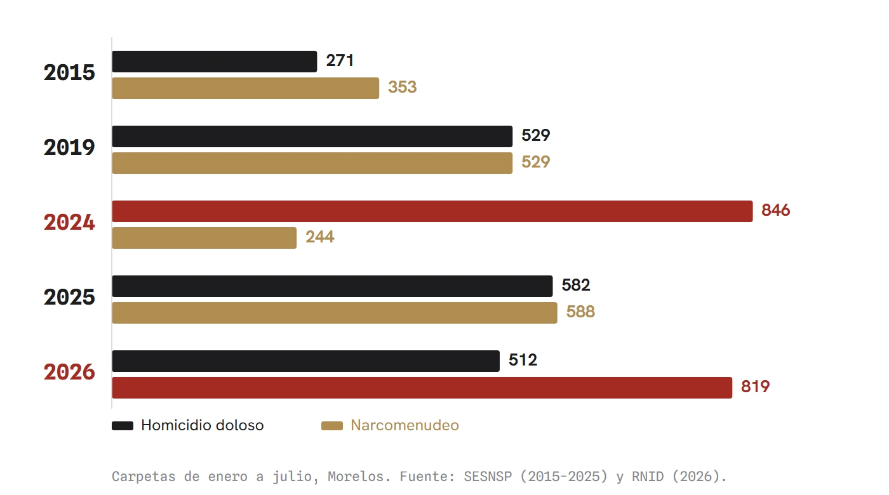
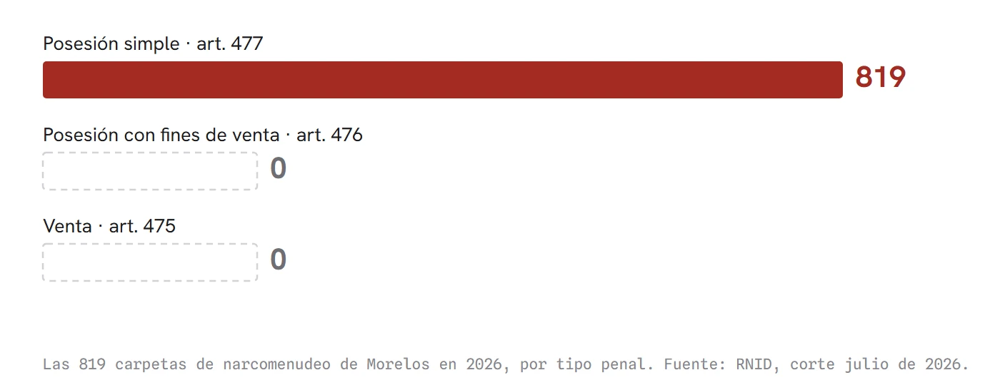

El año que menos droga encontraron
En Morelos el homicidio baja y la venta de droga en la calle llega a su cifra más alta. Las dos curvas son espejo desde hace una década, y eso solo se explica si ese número no mide cuánta droga se vende sino cuántas veces alguien fue a buscarla.
En Morelos matan menos. De enero a julio se abrieron 512 carpetas por homicidio doloso, contra 582 en el mismo periodo de 2025. Doce por ciento menos. A las casas también entran menos: 641 robos, la cifra más baja desde 2015, que es donde empieza la cuenta. Son datos oficiales y no hay razón para dudar de ellos.
Y aun así nadie se siente más seguro. Cuando alguien dice eso, casi siempre le contestan que se deje de cuentos, que ahí están los números. Antes de aceptar esa respuesta conviene mirar un tercer número.
La venta de droga en la calle, lo que la ley llama narcomenudeo, llegó este año a 819 carpetas de enero a julio. Es la cifra más alta que se haya registrado. Hace dos años era la tercera parte: 244 casos en 2024.
Ahí aparece algo que no cuadra. El peor año de Morelos fue 2024, con 846 homicidios de enero a julio, el máximo de toda la serie. Y ese mismo año, el más violento del que hay registro, fue el año en que menos droga se encontró. Dicho de otro modo: el año que más gente mataron fue el año que menos droga encontraron.

Eso no se explica por lo que pasa en la calle. Se explica por cómo se fabrica el número.
Si a alguien le roban, la víctima va al Ministerio Público y se abre una carpeta. Si matan a una persona, aparece el cuerpo y el caso se abre solo. Pero nadie levanta un acta porque en su esquina vendan droga. Ese delito casi nunca se denuncia: se encuentra, y entra a la lista solo cuando una patrulla sale, busca y detiene a alguien.
De ahí sale lo importante. Esa cifra no cuenta cuánta droga se vende en Morelos. Cuenta cuántas veces alguien fue a buscarla. Y si nadie sale a buscar, el número baja y la gráfica muestra una mejoría que en la calle no existe.
El estadístico francés Alain Desrosières lo explicó en La política de los grandes números (1993): las cifras oficiales no retratan una realidad previa, la arman con las casillas que alguien decidió usar. El número no es una foto del delito, es el registro de una decisión de escritorio sobre qué mirar.
Hasta aquí, la lectura amable sería que el alza significa más presencia policial. Conviene abrir el dato antes de creerla.
La Ley General de Salud separa tres conductas. El artículo 475 castiga al que vende. El 476, al que posee con el fin de vender. Y el 477, al que la trae encima en el supuesto expreso de que "por las circunstancias del hecho tal posesión no pueda considerarse destinada a comercializarlos o suministrarlos". Esa redacción importa: la tercera figura no describe una conducta, describe una ausencia de prueba. Es la casilla donde queda el expediente cuando no se pudo sostener que hubo venta.
De las 819 carpetas de narcomenudeo de Morelos en 2026, las 819 son del último supuesto. Posesión simple. Ninguna por vender. Ni una.

No es que la casilla no exista. A nivel nacional, 14,496 carpetas de este año se registraron como posesión con fines de venta, casi una de cada cuatro, y 26 estados la usan. En Sonora son dos de cada tres casos; en el Estado de México, siete de cada diez. En Morelos, cero. Solo cinco entidades más están en la misma situación.
Ese número no cuenta cuánta droga se vende. Cuenta cuántas veces fue la policía a buscarla.
El conteo viene acotado desde antes. El artículo 474 deja al fuero común solo lo inferior a mil veces la tabla del 479 y sin delincuencia organizada; el resto es federal. Como esa tabla fija 5 gramos de mariguana y 500 miligramos de cocaína, el techo de la cifra estatal son 5 kilos y medio kilo. La estadística que el gobierno presume no puede contener al narcotráfico: la ley lo manda a otra ventanilla antes de que llegue a esa cuenta.
Y esa casilla no dice quién es la persona. Puede ser un consumidor: el artículo 478 ordena no ejercer acción penal contra el consumidor con dosis personal, salvo que esté a menos de 300 metros de una escuela, un hospital o un penal, donde sí es procesable. Puede ser alguien que la trasladaba para otro: transportar es delito federal de 10 a 25 años en el Código Penal Federal, pero si no se acredita nada, el expediente cae en el 477, de 10 meses a 3 años, y ahí es donde el estado cuenta sus resultados.
Así que el alza no muestra a nadie entrando a los puntos de venta. Muestra revisiones en vía pública.
Y hay un episodio que lo enseña completo. En octubre de 2025, un operativo conjunto de la Fiscalía estatal, el Ejército, la Marina y la Guardia Nacional desmanteló cuatro laboratorios clandestinos en Morelos: dos en Yautepec, uno en Huitzilac y uno en Jonacatepec, con una producción estimada en 750 millones de pesos mensuales.
Ahora véase Yautepec, donde estaban dos de los cuatro. Sus homicidios bajaron de 36 a 31 y su narcomenudeo de 37 a 31: es uno de los cuatro municipios de todo el estado donde descienden las dos cifras a la vez. El municipio de las fábricas aparece entre los que mejoran.
No hay contradicción, y ese es el problema. El que produce no entra en esa cuenta. El que trafica tampoco. En esa cuenta solo entra el que traía.
Quedan por decir las razones que juegan contra cualquier conclusión apresurada, incluida la mía.
El punto de partida. Cuauhtémoc Blanco gobernó del 1 de octubre de 2018 al 30 de septiembre de 2024. Las cifras que siguen son del estado en ese periodo y no imputan conducta alguna a su persona.
El año anterior a esa administración, Morelos cerró con 693 homicidios, y el último año de ese mandato con 1,323. Casi el doble. Desde ese piso, cualquier gobierno posterior mejoraba el número haciendo poco.
La fecha. El gobierno estatal cambió el 1 de octubre de 2024, cuando Margarita González Saravia rindió protesta ante el Congreso local, y el giro de las curvas empieza ahí. Que dos cosas ocurran al mismo tiempo no significa que una cause la otra, y esta columna no lo afirma.
El cambio de reglas. El 2 de septiembre de 2025 se aprobó un catálogo nuevo para contar los delitos. Hay delitos que, buscados por su nombre de siempre, aparecen en cero en 2026 sin que haya pasado nada en la calle. La objeción obvia es que el alza de Morelos sea nada más eso. No lo es: el catálogo cambió igual en los 32 estados y el narcomenudeo nacional quedó casi idéntico, 61,138 carpetas en 2025 contra 61,625 en 2026. El país no se movió. Morelos sí.
En Morelos matan menos. Al menos, en carpetas. Y la cifra que subió no registra un solo caso de alguien vendiendo, mientras cuatro fábricas producían 750 millones de pesos al mes.
Puede que la fiscalía estatal clasifique así todo lo que le llega, o puede que de verdad no se esté tocando la venta. Con lo publicado no se distingue, y esa distinción es justo la que importa a quien vive aquí.
Lo que sí puede afirmarse es más pequeño y no depende de ninguna interpretación: el instrumento con el que se mide el combate al narcotráfico no registra al narcotráfico. Registra a quien cargaba. Un termómetro que solo marca cuando alguien decide encenderlo no informa sobre la fiebre. Informa sobre quién lo encendió.
- Secretariado Ejecutivo del Sistema Nacional de Seguridad Pública (SESNSP). Base municipal de incidencia delictiva 2015-2025, corte mayo de 2026. Cálculos propios sobre la entidad 17, enero a julio, sin tentativas. gob.mx/sesnsp/acciones-y-programas/datos-abiertos-de-incidencia-delictiva
- Registro Nacional de Incidencia Delictiva (RNID). Base municipal 2026, corte julio de 2026. Catálogo aprobado el 2 de septiembre de 2025. Desglose de subtipos calculado sobre la base cruda. gob.mx/sesnsp
- Ley General de Salud, artículos 474, 475, 476, 477, 478 y 479 (Capítulo VII, delitos contra la salud en su modalidad de narcomenudeo), pp. 201 a 203. Texto vigente publicado por la Cámara de Diputados del H. Congreso de la Unión, últimas reformas DOF 15 de enero de 2026. Cotejado contra el PDF. diputados.gob.mx/LeyesBiblio/pdf/LGS.pdf
- La Crónica de Hoy, Narcolaboratorios desmantelados en Morelos (22 de octubre de 2025): cuatro laboratorios, dos en Yautepec, uno en Huitzilac y uno en Jonacatepec, con producción estimada en 750 millones de pesos al mes. cronica.com.mx/estados/2025/10/22/narcolaboratorios-desmantelados-en-morelos
- Congreso del Estado de Morelos. Sesión solemne del 1 de octubre de 2024, toma de protesta de Margarita González Saravia. congresomorelos.gob.mx/2024/10/01/ante-el-congreso-del-estado-rinde-protesta-margarita-gonzalez-saravia-como-gobernadora-constitucional-de-morelos
- Desrosières, Alain. La política de los grandes números: historia de la razón estadística. Melusina, 2004 (original: La politique des grands nombres, La Découverte, 1993). ISBN 978-84-933273-9-9.
- 45 Digital Noticias. Hallazgo: el espejo del RNID, los delitos que cayeron a cero (11 de agosto de 2026). Expediente propio.
- Atlas municipal de inseguridad, 45 Digital Noticias. 45digitalnoticias.github.io/Inseguridad-Mexico/municipio.html
Las ligas van a la vista para que cualquiera compruebe por su cuenta. Si alguna dejó de resolver, escríbenos y la reponemos.
SRVO